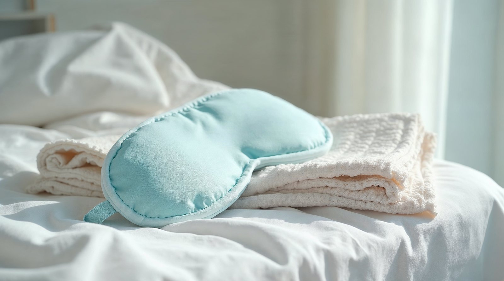
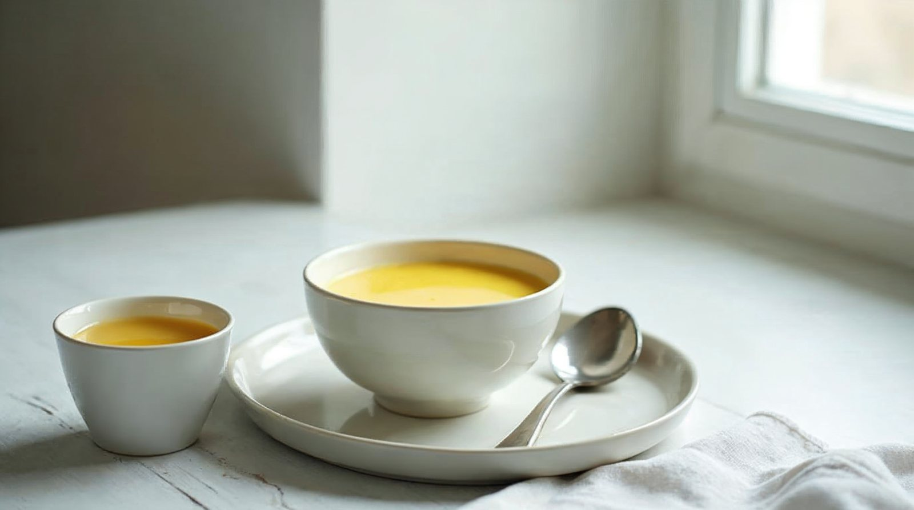
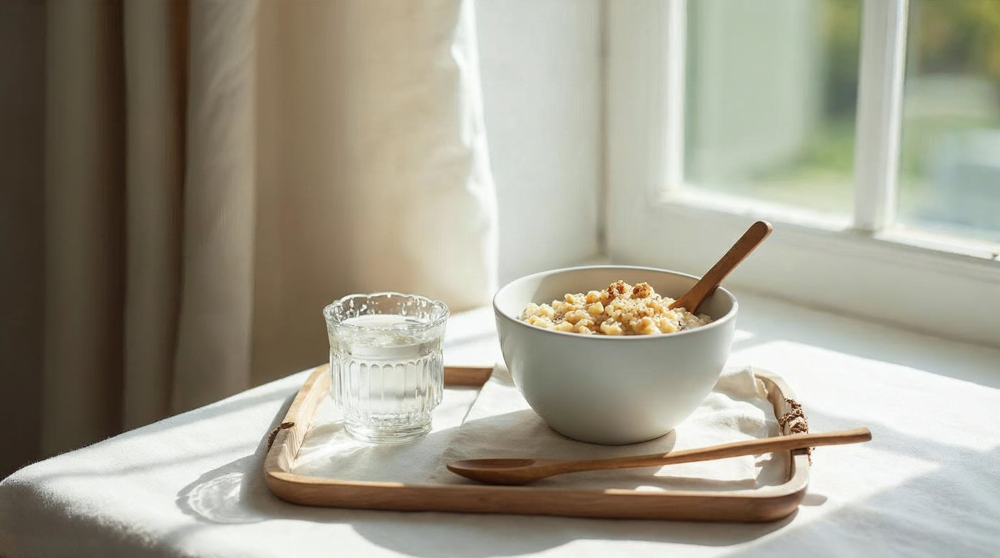
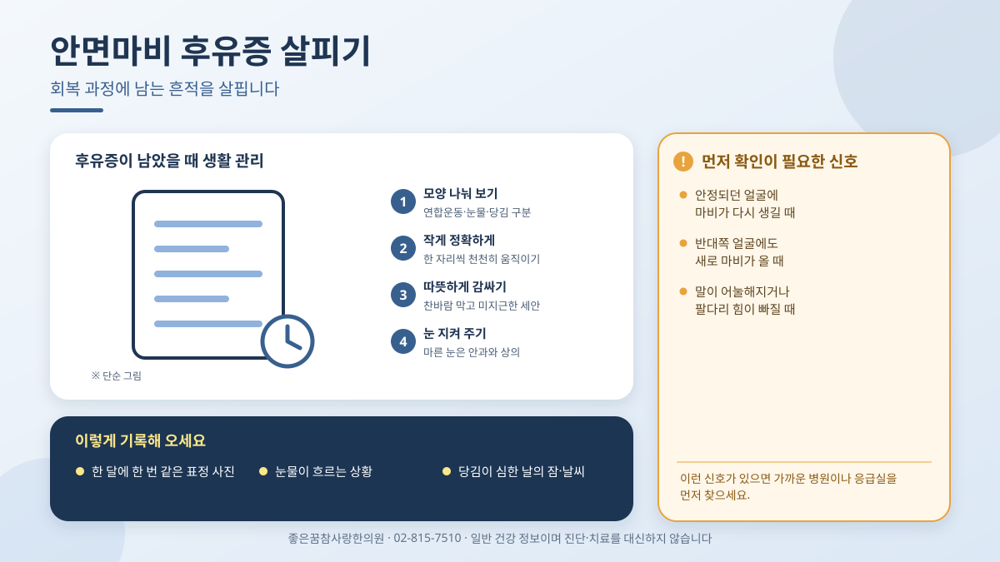

이종호 한의사 감수좋은꿈참사랑한의원 대표원장 (한의사 면허번호 19769)발행 2026-11-26 · 수정 2026-11-26
이 글의 차례
거울 앞에서 활짝 웃어 봅니다. 입꼬리는 이제 제법 올라가는데, 그 순간 같은 쪽 눈이 저절로 가늘게 감깁니다. 밥을 먹을 때는 그쪽 눈에서 눈물이 주르륵 흐르고, 저녁이 되면 볼과 입가가 뻣뻣하게 당겨 옵니다. 마비는 지나갔다고 하는데, 얼굴은 아직 예전 같지 않습니다.
안면마비를 겪으신 분들은 처음 몇 주 동안 얼굴이 움직이기만을 기다리십니다. 그런데 움직임이 돌아온 뒤에 새로운 불편이 찾아오면 당황스럽고 서운한 마음이 드십니다. 진료실에서도 "이제 다 나은 줄 알았는데 왜 이런 게 생기나요" 하는 말씀을 자주 듣습니다.
이런 불편은 안면마비 후유증이라고 부르는데, 신경이 회복되는 과정에서 생기는 흔적에 가깝습니다. 모든 분께 생기는 것은 아니지만, 마비가 깊었거나 회복이 더디었던 분들께 좀 더 자주 보입니다.
후유증이 있다고 해서 회복이 실패한 것은 아닙니다. 얼굴은 다시 움직이고 있고, 지금은 그 움직임이 더 자연스럽게 다듬어지는 시기라고 생각해 주시면 좋겠습니다. 이 글에서는 후유증의 모양과 생활에서 할 수 있는 일, 함께 살필 수 있는 부분을 정리했습니다.
안면마비 후유증에는 어떤 모양이 있나요
후유증은 사람마다 모양이 다릅니다. 하나만 남는 분도 있고 여러 가지가 겹치는 분도 있습니다. 내 얼굴에 어떤 모양이 있는지 알아 두시면 진료실에서 이야기하기가 훨씬 쉬워집니다.
- 연합운동: 웃거나 입을 움직일 때 같은 쪽 눈이 감기거나, 눈을 감을 때 입꼬리가 딸려 올라가는 모양
- 악어눈물: 밥을 먹거나 침이 고일 때 마비되었던 쪽 눈에서 눈물이 흐르는 모양
- 당김과 굳음: 얼굴 한쪽이 늘 긴장한 듯 뻣뻣하고, 저녁이나 추운 날 더 당기는 모양
- 근육 떨림: 눈가나 입가가 저절로 파르르 떨리는 모양
- 남은 약함: 이마 주름이나 입꼬리 올리기가 반대쪽보다 덜 되는 모양
이 가운데 연합운동과 당김이 가장 흔하게 말씀하시는 불편입니다. 얼굴 사진이나 짧은 영상을 같은 조명, 같은 표정으로 찍어 두시면 시간에 따른 변화를 비교하는 데 도움이 됩니다.
왜 회복된 뒤에 이런 후유증이 생길까요
얼굴을 움직이는 신경은 수천 가닥의 가느다란 줄이 다발로 묶인 모양입니다. 안면마비가 오면 이 줄들이 손상을 입고, 회복되는 동안 다시 자라 근육에 닿습니다. 그런데 다시 자라는 과정에서 일부 줄이 원래 가던 길이 아닌 옆 근육으로 이어지는 경우가 있습니다.
입을 움직이라는 신호가 눈 근육에도 함께 전해지면 웃을 때 눈이 감기는 연합운동이 됩니다. 침샘으로 가야 할 신호가 눈물샘으로 이어지면 밥을 먹을 때 눈물이 흐르는 악어눈물이 됩니다. 신경이 길을 잘못 찾은 흔적이라고 이해하시면 쉽습니다.
당김과 굳음은 오랫동안 움직이지 못했던 근육이 회복되면서 지나치게 긴장하는 쪽으로 자리 잡을 때 생기기 쉽습니다. 처음 마비가 깊었을수록, 회복 기간이 길었을수록 이런 흔적이 남을 가능성이 커진다고 알려져 있습니다.
반측안면경련과는 어떻게 다른가요
얼굴 한쪽이 저절로 씰룩이는 반측안면경련도 눈과 입이 함께 움직이는 모양이라 연합운동과 헷갈리기 쉽습니다. 차이는 시작점에 있습니다. 반측안면경련은 마비를 겪지 않았는데도 눈가에서 시작해 점점 입가로 번지는 경우가 많고, 가만히 있어도 떨립니다.
연합운동은 안면마비를 겪은 쪽 얼굴에서, 내가 어떤 표정을 지을 때 다른 근육이 딸려 움직이는 것이 특징입니다. 가만히 있을 때보다 웃거나 말하거나 먹을 때 더 두드러집니다. 이 구분은 신경과 진찰에서 확인하실 수 있습니다.
눈꺼풀만 잠깐 파르르 떨리는 것은 피로나 카페인, 잠 부족과 관련된 눈꺼풀 떨림인 경우가 많습니다. 마비를 겪은 적이 있다면 어떤 모양이든 처음 진료한 선생님께 한번 보여 드리시는 것이 좋습니다.
얼굴 운동은 크게보다 정확하게
후유증이 있는 분들이 흔히 하시는 실수는 얼굴을 최대한 크게, 세게 움직이려 하는 것입니다. 회복 초기에는 크게 움직이는 연습이 도움이 되기도 하지만, 연합운동이 보이기 시작한 뒤에는 오히려 딸려 움직이는 근육까지 함께 강해질 수 있습니다.
그래서 이 시기에는 거울을 보며 한 번에 한 자리만 천천히, 작게 움직이는 연습을 권합니다. 예를 들어 입꼬리를 올릴 때 눈이 감기지 않는 범위까지만 올렸다가 내리는 식입니다. 눈이 딸려 감기기 시작하면 그 직전에서 멈추고 숨을 고릅니다.
연습은 하루 두세 번, 한 번에 5~10분이면 충분합니다. 피곤한 날 억지로 오래 하는 것보다 짧게라도 꾸준히 하는 편을 권합니다. 구체적인 동작은 처음 진료한 병원의 재활 안내나 담당 선생님의 지도에 맞춰 조절하시면 됩니다.
얼굴 당김을 덜어 주는 생활
얼굴이 당기는 느낌은 추운 날, 피곤한 날, 긴장한 날에 더 심해진다고 말씀하시는 분이 많습니다. 찬바람이 부는 날에는 마스크나 목도리로 얼굴 한쪽을 감싸 주고, 세안할 때는 미지근한 물을 쓰시는 것이 좋습니다.
따뜻한 수건을 얼굴에 잠시 올려 두었다가, 손가락 끝으로 볼과 입가를 아주 부드럽게 쓸어 주는 것도 도움이 될 수 있습니다. 세게 누르거나 문지르기보다 피부를 살짝 미는 정도의 힘이면 충분합니다. 뜨거운 찜질은 피부에 자극이 될 수 있으니 피해 주세요.
음식을 먹을 때 한쪽으로만 씹는 습관이 생겼다면 양쪽을 고루 쓰도록 의식해 보세요. 너무 질기거나 딱딱한 음식은 당김을 키울 수 있으니, 당김이 심한 시기에는 부드러운 음식 위주로 드시면 편합니다.

눈 건강도 함께 챙겨 주세요
안면마비를 겪은 쪽 눈은 깜빡임이 약해지거나 눈이 완전히 감기지 않아 쉽게 마를 수 있습니다. 반대로 악어눈물처럼 눈물이 흐르는 분도 있지만, 그렇다고 눈이 촉촉한 것은 아니어서 눈이 따갑고 뻑뻑한 느낌이 함께 있을 수 있습니다.
눈이 잘 감기지 않는다면 안과 진료를 받아 인공눈물이나 연고, 잘 때 눈을 보호하는 방법을 안내받으시길 권합니다. 화면을 오래 보는 날에는 의식적으로 눈을 감았다 뜨는 시간을 만들어 주세요.
밥 먹을 때 흐르는 눈물은 깨끗한 손수건으로 가볍게 눌러 닦아 주시면 됩니다. 눈가를 자주 문지르면 피부가 짓무를 수 있으니, 닦을 때는 누르듯이 부드럽게 해 주세요.

말하기와 먹기에서 생기는 작은 불편
후유증이 남은 분들은 얼굴뿐 아니라 말하기와 먹기에서도 작은 불편을 느끼십니다. 'ㅂ', 'ㅍ'처럼 입술을 다무는 소리가 약하게 나거나, 빨대로 마실 때 한쪽으로 새거나, 음식이 볼 안쪽에 고이는 느낌이 드는 경우가 있습니다.
이런 불편은 천천히 또박또박 말하는 연습, 물을 머금었다가 삼키는 연습처럼 일상 속 작은 동작으로 다듬어 볼 수 있습니다. 볼 안쪽에 음식이 고인다면 식사 뒤 물로 가볍게 헹궈 입안을 깨끗하게 해 주세요.
입술이 잘 다물어지지 않는 쪽은 입가가 쉽게 트고 갈라질 수 있습니다. 입술 보습제를 자주 발라 주고, 식사 뒤에는 입가를 부드럽게 닦아 주시면 좋습니다.
피곤한 날 더 두드러지는 이유
후유증을 가진 분들께 여쭈면 "피곤한 날은 더 당기고, 더 딸려 움직이는 것 같다"는 말씀을 많이 하십니다. 몸이 지치면 근육의 긴장을 조절하는 힘이 떨어지고, 작은 자극에도 근육이 더 쉽게 굳기 때문입니다.
그래서 얼굴 운동만큼이나 잠과 쉼을 챙기는 것이 중요합니다. 일이 몰리는 주에는 얼굴 운동 시간을 억지로 늘리기보다, 잠드는 시각을 지키고 저녁에 따뜻한 수건으로 얼굴과 목을 데워 주는 쪽을 먼저 챙겨 보세요.
마음이 위축되는 것도 자연스러운 일입니다
얼굴은 사람을 만날 때 가장 먼저 보이는 곳이라, 후유증이 남으면 사진 찍기나 사람 앞에서 웃는 일이 망설여지기 쉽습니다. 이런 마음은 지극히 자연스러운 것입니다. 스스로를 탓하지 않으셨으면 합니다.
잠을 설치고 긴장이 이어지면 얼굴의 당김과 떨림도 더 두드러지는 경향이 있습니다. 그래서 진료실에서는 얼굴만 보지 않고 잠과 긴장, 피로를 함께 여쭙니다. 몸 전체가 조금 편해지면 얼굴의 불편도 한결 덜하게 느껴지는 분들이 많습니다.
회복은 계단처럼 옵니다
후유증의 변화는 매일 조금씩 좋아지는 직선이라기보다, 한동안 그대로인 것 같다가 어느 날 한 칸 올라서는 계단에 가깝습니다. 몇 주 동안 달라진 것이 없어 보여 실망하시다가, 한 달 전 사진과 비교해 보고 나서야 변화를 알아차리시는 경우가 많습니다.
그래서 거울을 하루에도 여러 번 들여다보며 확인하기보다, 정해진 날에만 사진을 찍고 비교하시길 권합니다. 날마다 얼굴을 살피다 보면 작은 차이에도 마음이 흔들리고, 그 긴장이 다시 얼굴의 당김으로 이어질 수 있습니다.
주변 사람들은 생각보다 내 얼굴의 작은 차이를 잘 알아차리지 못합니다. 나에게는 크게 보이는 당김도 남에게는 거의 보이지 않는 경우가 많으니, 사람을 만나는 일을 너무 피하지 않으셨으면 합니다.
먼저 이렇게 여쭙니다
처음 오시면 대략 이런 순서로 여쭙니다. 미리 생각해 오시면 이야기가 수월해집니다.
- 안면마비는 언제 시작되었고, 어느 쪽이었나요?
- 처음에 어떤 진단과 치료를 받으셨나요?
- 지금 가장 불편한 것은 연합운동, 눈물, 당김 가운데 무엇인가요?
- 하루 중 언제, 어떤 상황에서 더 심해지나요?
- 눈이 마르거나 따가운 느낌이 있나요?
- 잠, 피로, 긴장은 요즘 어떠신가요?
- 드시는 약과 다른 병원 진료가 있나요?
일상에서 먼저 해 볼 수 있는 것
- 거울을 보며 한 자리씩 작게, 천천히 움직이는 연습 하루 두세 번
- 찬바람 부는 날 마스크나 목도리로 얼굴 감싸기
- 세안은 미지근한 물로, 따뜻한 수건을 잠시 올려 두기
- 음식은 양쪽으로 고루 씹고, 당김이 심한 날은 부드러운 음식 고르기
- 화면을 볼 때 눈을 감았다 뜨는 쉬는 시간 만들기
- 잠드는 시각을 일정하게 맞추기
후유증은 몇 달에 걸쳐 조금씩 달라지는 경우가 많습니다. 하루하루의 변화보다 한 달 단위로 사진을 비교해 보시는 편이 마음이 덜 조급해집니다.
한의원에서 함께 살필 수 있는 경우
- 웃거나 먹을 때 눈이 함께 감기는 연합운동이 불편한 경우
- 얼굴 한쪽이 늘 당기고 추운 날이나 피곤한 날 더 뻣뻣한 경우
- 눈가나 입가가 자주 파르르 떨리는 경우
- 후유증 때문에 긴장이 이어지고 잠이 얕아진 경우
- 목과 어깨, 귀 뒤가 함께 굳어 있는 경우
좋은꿈참사랑한의원에서는 먼저 얼굴의 움직임을 하나씩 확인하고, 맥을 짚어 몸 전체의 상태를 살핍니다. 그다음 침, 온열 관리, 한약 상담 가운데 지금 상태에 맞는 것을 진찰 뒤에 정합니다.
한약을 상의할 때는 드시는 약을 모두 확인하고 신중하게 정합니다. 신경과, 이비인후과, 안과, 재활의학과 진료를 받고 계신다면 그 진료는 그대로 이어 가시고, 처방받은 약은 처방한 선생님과 상의 없이 멈추지 않으셔야 합니다. 임신 중이시라면 먼저 알려 주시고 산부인과와도 상의해 주세요.

이렇게 기록해 오시면 상담이 쉬워집니다
- 같은 조명, 같은 표정으로 찍은 얼굴 사진이나 짧은 영상(한 달에 한 번)
- 연합운동이 두드러지는 표정이나 동작
- 눈물이 흐르는 상황과 정도
- 당김이 심했던 날의 날씨, 잠, 피로
- 하루에 한 얼굴 운동의 시간과 방법
사진과 기록이 쌓이면 어떤 날 불편이 커지는지, 어떤 연습이 맞는지가 조금씩 보입니다. 그것을 함께 보며 다음 걸음을 정합니다. 처음 마비 때 찍어 둔 사진이 있다면 그것도 함께 보여 주세요. 지금까지 얼마나 회복되어 왔는지를 확인하는 것만으로도 마음이 조금 놓이실 수 있습니다.
이런 증상은 먼저 확인이 필요합니다
- 안정되어 있던 얼굴에 마비가 다시 생기거나 반대쪽 얼굴에도 새로 마비가 오는 경우
- 얼굴 마비와 함께 말이 어눌해지거나 팔다리에 힘이 빠지는 경우
이런 신호가 있으면 한의원보다 가까운 병원이나 응급실을 먼저 찾으세요.
함께 읽으면 좋은 글
- 얼굴 근육이 파르르 떨릴 때는 어떤 점을 먼저 확인하나요?
- 얼굴 한쪽 눈가와 입꼬리가 함께 씰룩이는 반측안면경련은 어떻게 살피나요?
- 눈 밑이나 눈꺼풀이 며칠째 파르르 떨리는 눈꺼풀 떨림은 어떻게 살피나요?
- 눈이 뻑뻑하고 모래가 들어간 듯 따갑거나 쉽게 피로한 안구건조증은 어떻게 살피나요?

여쭙는 것
- 안면마비는 언제 시작되었고, 어느 쪽이었나요?
- 처음에 어떤 진단과 치료를 받으셨나요?
- 지금 가장 불편한 것은 연합운동, 눈물, 당김 가운데 무엇인가요?
생활에서 해 볼 것
- 거울을 보며 한 자리씩 작게, 천천히 움직이는 연습 하루 두세 번
- 찬바람 부는 날 마스크나 목도리로 얼굴 감싸기
- 세안은 미지근한 물로, 따뜻한 수건을 잠시 올려 두기
한의원에서 함께 살필 것
- 웃거나 먹을 때 눈이 함께 감기는 연합운동이 불편한 경우
- 얼굴 한쪽이 늘 당기고 추운 날이나 피곤한 날 더 뻣뻣한 경우
- 눈가나 입가가 자주 파르르 떨리는 경우
먼저 확인이 필요한 신호
- 안정되어 있던 얼굴에 마비가 다시 생기거나 반대쪽 얼굴에도 새로 마비가 오는 경우
- 얼굴 마비와 함께 말이 어눌해지거나 팔다리에 힘이 빠지는 경우
한눈에 보는 표
| 구분 | 핵심 |
|---|---|
| 여쭙는 것 | 안면마비는 언제 시작되었고, 어느 쪽이었나요? 처음에 어떤 진단과 치료를 받으셨나요? |
| 생활에서 해 볼 것 | 거울을 보며 한 자리씩 작게, 천천히 움직이는 연습 하루 두세 번 찬바람 부는 날 마스크나 목도리로 얼굴 감싸기 |
| 한의원에서 함께 살필 것 | 웃거나 먹을 때 눈이 함께 감기는 연합운동이 불편한 경우 얼굴 한쪽이 늘 당기고 추운 날이나 피곤한 날 더 뻣뻣한 경우 |
| 먼저 확인이 필요한 신호 | 안정되어 있던 얼굴에 마비가 다시 생기거나 반대쪽 얼굴에도 새로 마비가 오는 경우 얼굴 마비와 함께 말이 어눌해지거나 팔다리에 힘이 빠지는 경우 |
자주 묻는 질문
연합운동은 시간이 지나면 저절로 없어지나요?
사람마다 달라서 한 가지로 말씀드리기 어렵습니다. 몇 달에 걸쳐 조금씩 덜해지는 분도 있고 오래 남는 분도 있어서, 사진 기록으로 변화를 지켜보며 생활과 연습을 함께 조절해 가는 것이 좋습니다.
얼굴 운동은 세게 많이 할수록 좋은가요?
연합운동이 보이는 시기에는 크게, 세게보다 작게, 정확하게 움직이는 쪽을 권합니다. 딸려 움직이는 근육까지 함께 강해질 수 있기 때문입니다.
밥 먹을 때 눈물이 나는 것도 후유증인가요?
마비되었던 쪽 눈에서 식사 때 눈물이 흐른다면 악어눈물이라 부르는 후유증일 수 있습니다. 눈이 마르거나 따가운 느낌이 함께 있다면 안과 진료도 받아 보세요.
마비가 오래전이었는데 지금 진료를 받아도 되나요?
시간이 지났더라도 지금 불편한 당김이나 떨림, 잠과 긴장을 함께 살필 수 있습니다. 처음 진단과 치료 기록을 가져와 주시면 이야기가 수월해집니다.
좋은꿈참사랑한의원은 재진 때 지난번 이야기부터 이어서 여쭙니다. 진료시간과 예약은 오시는 길에서 확인하세요.
어디서 상담받을 수 있나요?
좋은꿈참사랑한의원은 서울 동작구 만양로2길 2 신성빌딩 3층·5층(서울 동작구 상도동, 7호선 상도역 3번 출구 근처)에 있습니다. 한의사 3명(이종호 대표원장, 조영기 수석진료원장, 정원영 진료원장)이 진료합니다. 진료시간은 평일 09:30~20:00(점심 13:00~14:00), 토·일·공휴일 09:30~15:00이며, 방문 전 전화로 확인을 권합니다. 예약은 네이버 예약, 카카오톡 상담, 전화 02-815-7510로 받습니다.
이 글은 일반적인 건강 정보이며 개인의 진단이나 치료를 대신하지 않습니다. 증상이 있거나 복용 중인 약이 있다면 진료를 통해 확인하세요. 치료 효과는 개인마다 다를 수 있습니다.
작성 기준: 일반적으로 알려져 있는 건강 정보를 참고해 정리했습니다(대표원장 감수). 증상 기록은 1~2주 동안 하루 1회, 비슷한 시간에 적어 오시면 지난 상태와 비교하기 쉽습니다.